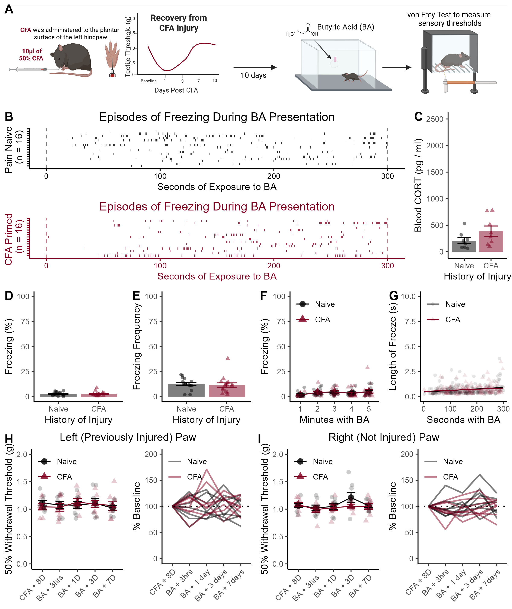

Supplemental Figure 3

Supplemental Figure 3. Behavioral, hormonal, and sensory responses to butyric acid presentation. (A) Timeline of experimental proceedings. Mice were placed in an apparatus with 35 \(\mu l\) of 10% butyric acid 10 days after CFA administration. (B) Raster plots of individual freezing episodes during the butyric acid session. (C) Circulating levels of CORT 30 minutes after butyric acid presentation. (D) Average freezing during butryic acid was very low. (E) Number of freezing episodes during the five-minute exposure to butyric acid. (F) The amount of time spent freezing did not increase across the five minutes of the test. (G) There was no significant increase in length of freezing episodes across the five minute session. (H) There was no change in mechanical thresholds at the site of previous CFA injury after the butyric acid exposure, or (I) the opposite (not previously injured) hind paw. Data presented as mean value +/- SEM
CORT Levels
##
## Two Sample t-test
##
## data: CORT by CFA
## t = -1.6381, df = 14, p-value = 0.1237
## alternative hypothesis: true difference in means between group Naive and group CFA is not equal to 0
## 95 percent confidence interval:
## -418.7721 56.0936
## sample estimates:
## mean in group Naive mean in group CFA
## 207.3606 388.6998A history of CFA injury did not increase circulating CORT 30 minutes after the butyric acid session (p = 0.12, Figure S3C).
Time Spent Freezing During TMT
b <- Exp_1_CFA.N %>%
filter(Behavior == "freeze") %>%
group_by(ID,CFA) %>%
summarise(
sum=sum(Duration),
Number=n(),
) %>%
mutate(Perc = (sum / 300)*100) ## `summarise()` has grouped output by 'ID'. You can override using the `.groups`
## argument.##
## Two Sample t-test
##
## data: Perc by CFA
## t = 0.2122, df = 30, p-value = 0.8334
## alternative hypothesis: true difference in means between group Naive and group CFA is not equal to 0
## 95 percent confidence interval:
## -1.275518 1.571310
## sample estimates:
## mean in group Naive mean in group CFA
## 2.918896 2.771000There was no group difference in the amount of time spent freezing (p = 0.83, Figure S3D).
Freezing Frequency During TMT
b <- Exp_1_CFA.N %>%
filter(Behavior == "freeze") %>%
group_by(ID,CFA) %>%
summarise(
sum=sum(Duration),
Number=n(),
)## `summarise()` has grouped output by 'ID'. You can override using the `.groups`
## argument.##
## Two Sample t-test
##
## data: Number by CFA
## t = 0.38956, df = 30, p-value = 0.6996
## alternative hypothesis: true difference in means between group Naive and group CFA is not equal to 0
## 95 percent confidence interval:
## -4.242551 6.242551
## sample estimates:
## mean in group Naive mean in group CFA
## 12.625 11.625There was no difference in frequency of freezing (p = 0.70, Figure S3E)
Freezing Each Minute With TMT
a <- Exp_1_CFA.N %>%
na.omit() %>%
mutate(Bins = cut(
Start_clean,
breaks = 5,
labels=c("1","2","3","4","5")
)) %>%
group_by(ID, Behavior, CFA, Bins) %>%
summarise(
sum = sum (Duration)
) %>%
mutate(Perc = (sum / 60)*100 ) %>%
filter(Behavior == "freeze")## `summarise()` has grouped output by 'ID', 'Behavior', 'CFA'. You can override
## using the `.groups` argument.## Df Sum Sq Mean Sq F value Pr(>F)
## Bins 4 115.7 28.93 1.672 0.161
## Residuals 114 1972.7 17.30Unlike the behavioral patterns observed during TMT presentation, there was no increase in the time spent freezing (p = 0.16, Figure S3F)
Linear Relationship Between Time and Length of Freeze
##
## Call:
## lm(formula = Duration ~ Start_clean * CFA, data = Exp_1_CFA.N)
##
## Residuals:
## Min 1Q Median 3Q Max
## -1.633 -1.151 -0.820 -0.102 33.441
##
## Coefficients:
## Estimate Std. Error t value Pr(>|t|)
## (Intercept) 1.5093969 0.2665738 5.662 1.93e-08 ***
## Start_clean 0.0007741 0.0015560 0.497 0.619
## CFACFA 0.1373560 0.3907523 0.352 0.725
## Start_clean:CFACFA 0.0002573 0.0022362 0.115 0.908
## ---
## Signif. codes: 0 '***' 0.001 '**' 0.01 '*' 0.05 '.' 0.1 ' ' 1
##
## Residual standard error: 3.022 on 1055 degrees of freedom
## (64 observations deleted due to missingness)
## Multiple R-squared: 0.00156, Adjusted R-squared: -0.001279
## F-statistic: 0.5496 on 3 and 1055 DF, p-value: 0.6485There was no increase in the length of freezing episodes (p = 0.50, Figure S3G) across the session.
Von Frey Paw Sensitivity
## ANOVA Table (type II tests)
##
## $ANOVA
## Effect DFn DFd F p p<.05 ges
## 1 CFA 1 14 0.012 0.916 0.000176
## 2 Test 4 56 0.324 0.861 0.018000
## 3 CFA:Test 4 56 0.350 0.843 0.019000
##
## $`Mauchly's Test for Sphericity`
## Effect W p p<.05
## 1 Test 0.665 0.83
## 2 CFA:Test 0.665 0.83
##
## $`Sphericity Corrections`
## Effect GGe DF[GG] p[GG] p[GG]<.05 HFe DF[HF] p[HF] p[HF]<.05
## 1 Test 0.824 3.3, 46.16 0.826 1.109 4.43, 62.08 0.861
## 2 CFA:Test 0.824 3.3, 46.16 0.808 1.109 4.43, 62.08 0.843## ANOVA Table (type II tests)
##
## $ANOVA
## Effect DFn DFd F p p<.05 ges
## 1 CFA 1 14 1.136 0.304 0.021
## 2 Test 4 56 1.708 0.161 0.082
## 3 CFA:Test 4 56 0.995 0.418 0.050
##
## $`Mauchly's Test for Sphericity`
## Effect W p p<.05
## 1 Test 0.368 0.194
## 2 CFA:Test 0.368 0.194
##
## $`Sphericity Corrections`
## Effect GGe DF[GG] p[GG] p[GG]<.05 HFe DF[HF] p[HF] p[HF]<.05
## 1 Test 0.731 2.92, 40.91 0.182 0.944 3.78, 52.87 0.165
## 2 CFA:Test 0.731 2.92, 40.91 0.403 0.944 3.78, 52.87 0.415There were no changes in mechanical thresholds after butyric acid (Left paw: all p > 0.84; Right paw: all p > .16, Figure S3H & I, respectively).